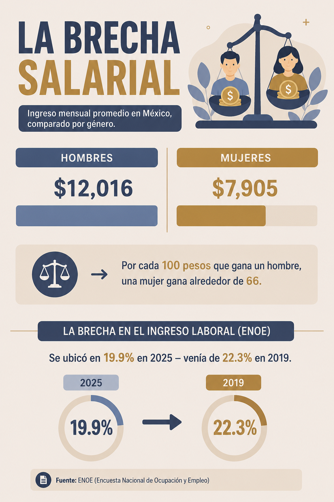

Este museo recorre, en cinco salas, por qué la igualdad entre mujeres y hombres sigue siendo una promesa a medio cumplir y qué se necesita para completarla.
El problema, en una frase
En México, y en buena parte del mundo, el género de una persona sigue determinando cuánto gana, qué tan segura está y qué lugares puede ocupar. La igualdad de género busca romper esa relación.
Objetivo del museo
Sensibilizar sobre la desigualdad de género a través de datos, historias y experiencias interactivas, y invitar a quien visita a reconocer estas dinámicas en su propia vida cotidiana.
Tres formas distintas de mirar la misma desigualdad: lo que se gana, lo que ha pasado en el tiempo, y lo que se vive en el cuerpo.

Espacio reservado para tu infografía (PNG o JPG).
Reemplaza el atributo src de la imagen con el nombre de tu archivo, por ejemplo: infografia-brecha.png
Las mujeres obtienen el derecho al voto en elecciones federales en México.
Se reforma el Artículo 4° constitucional para establecer la igualdad entre el varón y la mujer ante la ley.
México firma la Convención sobre la Eliminación de Todas las Formas de Discriminación contra la Mujer (CEDAW).
Entra en vigor la Ley General de Acceso de las Mujeres a una Vida Libre de Violencia.
Reforma de "paridad en todo": la paridad de género se vuelve obligatoria en los tres poderes y niveles de gobierno.
El INEGI publica la quinta ENDIREH, la encuesta más completa sobre violencia contra las mujeres en el país.
Toca cada cifra para ver de dónde viene.
El corazón audiovisual del museo: un video original de 2 a 4 minutos que pone rostro y voz a la problemática.
Antes de salir del museo, tres formas de detenerte a pensar.
Un país no puede caminar bien si la mitad de su gente camina con un pie atado. — Voz recogida en un foro comunitario sobre igualdad de género, 2024
La transparencia también es parte de la ética de este museo.